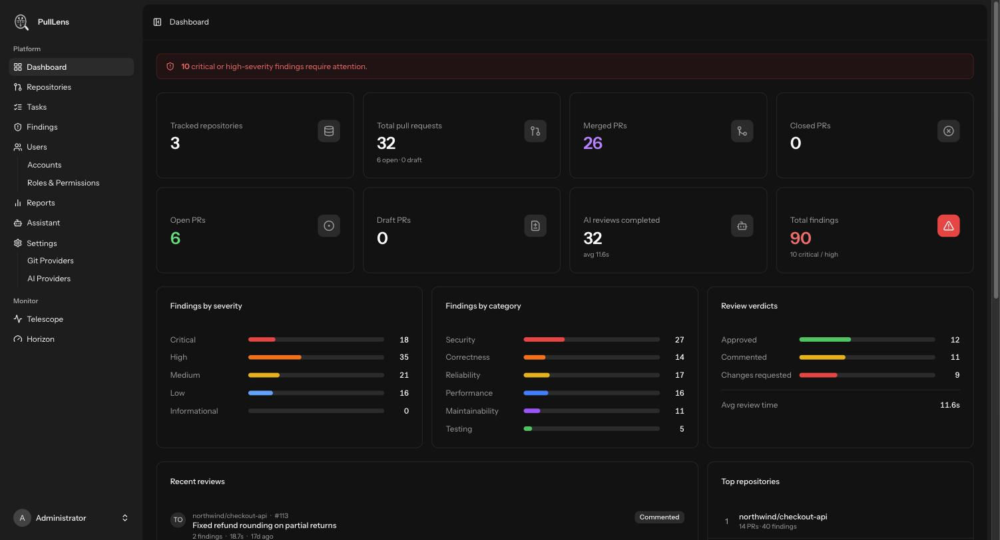

Using PullLens
Dashboard
Where things stand right now: what is outstanding, what is risky, and whether the system itself is healthy.

System alerts
Banners appear only when something needs attention, and only for users who can act on it - an alert linking to a settings page you cannot open would be worse than none.
| Alert | Meaning |
|---|---|
| No AI provider configured | Reviews cannot run. Add one. |
| AI provider returning errors | Recent reviews failed with rate limits or authentication errors. Check your key and quota. |
| GitHub App not configured | No repository access. Connect GitHub. |
| GitHub authentication failing | Background jobs are getting 401s. Reconnect the account. |
| n critical or high findings require attention | Unresolved high-risk findings on open pull requests. Click through to Findings. |
The numbers
| Tile | What it counts |
|---|---|
| Tracked repositories | Repositories PullLens is watching. |
| Total pull requests | Every pull request seen, with open and draft broken out beneath. |
| Merged / Closed / Open / Draft PRs | Counts by state. |
| AI reviews completed | Reviews finished, with the average time one takes. |
| Total findings | All findings, with the critical and high count called out. |
Breakdowns
| Panel | What it shows |
|---|---|
| Findings by severity | Critical, high, medium, low and informational. |
| Findings by category | Security, correctness, reliability, performance, maintainability and testing - where your problems actually cluster. |
| Review verdicts | Approved, commented and changes-requested, plus average review time. |
| Recent reviews | The latest completed reviews with author, verdict and finding count. |
| Top repositories | Busiest repositories by pull request volume. |
Scoped to what you can see
If your account is limited to certain repositories, every number here covers only those. Two people can open the same dashboard and correctly see different totals.